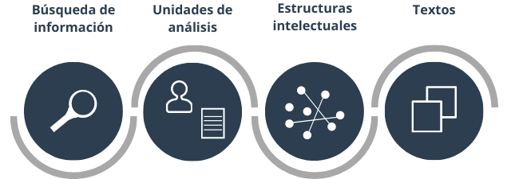

Esta página web compila la información básica del curso Bibliometría en R para el mapeo de la ciencia y la revisión de literatura. Con esta página se pretende complementar la información conceptual de los contenidos presenciales. El objetivo principal del curso es aplicar las herramientas bibliométricas a la producción científica para el mapeo de la ciencia y para la revisión de literatura. El análisis de las bases de datos de documentos se hará usando el lenguaje de programación R y el software RStudio como herramientas para la manipulación y visualización de los datos.
Todo el curso se desarrolla en R a través del contenido práctico de ejercicios, esto permite a los asistentes aprender sobre el uso de técnicas bibliométricas mientras se diseñan y aplican los códigos en R y fomenta la discusión de la interpretación de los resultados.
El curso cubre los temas de preparación, búsqueda y obtención de información científica; selección de las bases de datos; y visualización e interpretación de los documentos. Estos temas se desarrollan en las cuatro partes del curso y buscan cumplir con los siguientes objetivos de aprendizaje.
El número de publicaciones académicas se incrementa con el paso de los años. Así mismo, surgen nuevas revistas que abordan diversos temas de investigación. Por lo cual, el creciente ritmo de producción de conocimiento hace que estar al día con los hallazgos y evidencias sea una tarea que requiere cada vez más tiempo (Aria & Cuccurullo, 2017). De allí que, la bibliometría, como una técnica para la medición de la actividad científica, resulta bastante útil para analizar grandes volúmenes de información.
Para llevar a cabo un análisis bibliométrico, un investigador puede hacer uso de diversos software, sin embargo, para usarlos, el investigador debe familiarizarse con cada entorno, lo cual muchas veces es una barrera de entrada, ya que requiere tiempo y aprendizaje. Además, la mayoría de los software se especializan en análisis específicos, por lo que se requiere de varios de ellos para un resultado más completo.
No obstante, en R se han desarrollado paquetes que proporcionan un análisis bibliométrico más completo y sus resultados permiten complementar la actividad investigativa, lo cual facilita su uso.
El curso de Bibliometría en R para el mapeo de la ciencia y las revisiones de literatura. está dirigido tanto a quienes deseen aprender a visualizar e interpretar bases de datos de artículos científicos de manera ágil y dinámica, como a quienes necesiten complementar el proceso de revisión de literatura al aplicar herramientas bibliométricas como valor agregado a su actividad académica.
Los contenidos de este curso no requieren en los asistentes un conocimiento especializado en R, ya que se comenzará con las ideas básicas del lenguaje de programación. Este curso está especialmente dirigido a personas con conocimiento básico en bases de datos científicas (Scopus o WoS).
El contenido sigue un flujo de trabajo el cual consiste en la búsqueda de información, el análisis descriptivo de las unidades de análisis, el análisis y visualización de los datos y la interpretación de los resultados (Zupic & Čater, 2015).

En las cuatro partes del curso se utilizan casos aplicados y durante la explicación del contenido se van aplicando los conceptos y técnicas bibliométricas. Además, si irá construyendo el código en R para explorar los resultados de las bases de datos.